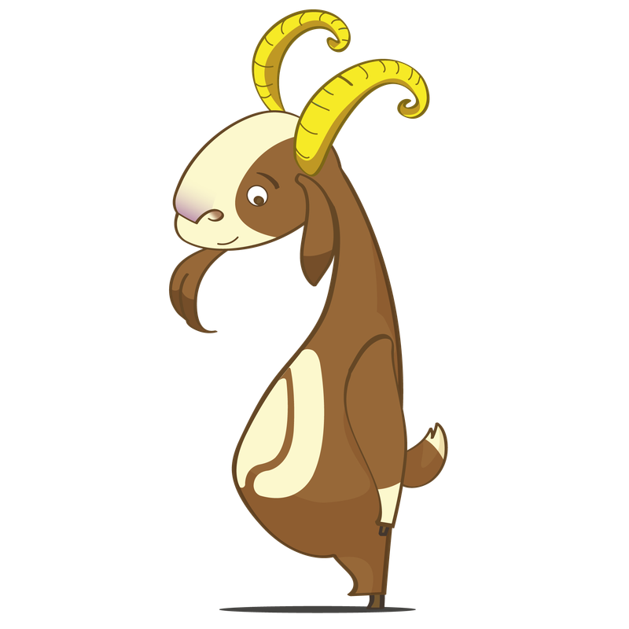

Cursos Disciplinares en Inglés
Cursa y aprueba 2 asignaturas código ADMI dictadas en inglés, directamente en la Facultad de Administración de Uniandes.


Tu guía interactiva y siempre vigente para planear, aplicar y hacer seguimiento a cada camino posible para cumplir el requisito internacional del pregrado en Administración: 11 modalidades de experiencia internacional, más los cursos disciplinares en inglés.
Pasa las páginas con las flechas, el teclado (← →), las esquinas inferiores de cada hoja o deslizando en tu celular. Si una hoja tiene más contenido, desliza hacia abajo dentro de ella. Usa Contenido para saltar directo a cualquier capítulo.
Este manual es una guía de seguimiento: diligenciarlo no garantiza por sí solo el cumplimiento del Requisito Internacional. Debes además coordinar una cita de consejería internacional y reportar tu experiencia en Salesforce.
Para obtener el título de Administrador debes cumplir con el Requisito Internacional de la Facultad de Administración, vigente desde 2016 para todos los estudiantes que iniciaron sus estudios a partir de ese año. Está diseñado para complementar tu formación académica y desarrollar una perspectiva global frente a los mercados y entornos dinámicos actuales.
Asegurar que el estudiante que cursa el pregrado en Administración de empresas adquiera una perspectiva global adicional al curso y aprobación del plan de estudios general.
Debes cumplir con los siguientes dos componentes, que son independientes y no se sustituyen entre sí.
Cursar y aprobar dos cursos código ADMI vistos en inglés, del plan de estudios actual del pregrado en Administración, inscritos y aprobados directamente en la Facultad de Administración de Uniandes.
Inscribir, cursar en su totalidad y aprobar al menos una de las 11 modalidades del portafolio de experiencia internacional que encontrarás en el panel de opciones.
Este es el primer componente, y es independiente al cumplimiento de la experiencia internacional. Recuerda cumplir con ambos. A continuación la tarjeta de los cursos disciplinares en inglés para tu seguimiento.
Cursa y aprueba 2 asignaturas código ADMI dictadas en inglés, directamente en la Facultad de Administración de Uniandes.
Todo estudiante debe cursar y aprobar 2 asignaturas en inglés de código ADMI, ofrecidas directamente por la Facultad de Administración de Uniandes. Los cursos deben ser vistos y aprobados en Uniandes para cumplir este componente.
Tu avance se guarda automáticamente en este navegador
Este es el segundo componente. Recuerda que aparte de aprobar los cursos en inglés, debes cursar y aprobar al menos una de las opciones disponibles de experiencias internacionales de la Facultad de Administración.
Da clic en la experiencia que quieres visualizar, en la página de la derecha. Verás su detalle completo y podrás diligenciarla. Marca el check de la tarjeta cuando la hayas cumplido.
Cursa un semestre en una universidad aliada a través de la convocatoria oficial. Más de 50 convenios específicos y 100+ generales.
Obtén tu título de Uniandes y un título simultáneo en NEOMA, Toulouse Business School, FGV, Tulane o Tilburg.
Aprueba 2 cursos de la EIV de la Facultad de Administración o de otras facultades de Uniandes, uno 100% presencial.
Aprueba el equivalente a 2 cursos de la EIV en una universidad externa aliada o, con autorización previa, en un programa externo.
Realiza una práctica profesional 100% presencial en el exterior, relacionada con Administración y validada por el CTP.
Cursa y aprueba en su totalidad alguna de las 9 opciones de lengua y cultura de la Universidad de los Andes.
Inscribe, cursa y aprueba 5 cursos de idiomas del Departamento de Lenguas y Cultura, en máximo 2 idiomas distintos.
Representa a la Facultad en un evento donde estudiantes de distintos países compiten aplicando conocimientos de Administración.
Vive una experiencia de inmersión en investigación en una universidad en el exterior, junto a nuestros socios internacionales.
Participa y obtén certificado oficial de asistencia de programas como Babson, Global Village o HUWIB.
Realiza una movilidad académica internacional postulando tú mismo, con o sin convenio vigente con Uniandes.
Actualizadas a partir de las preguntas frecuentes oficiales de la Oficina Internacional, agosto de 2026.
Únicamente los cursos código ADMI en inglés ofrecidos directamente por la Facultad de Administración. Revisa la oferta de cada semestre en el catálogo académico.
Sí. Solo necesitas dos para cumplir con este componente, pero puedes ver más si quieres.
No, en ninguno de los dos casos. Los cursos código ADMI en inglés deben ser vistos y aprobados en Uniandes, sin excepción.
No. Los cursos que usas para el componente de cursos disciplinares en inglés no pueden ser los mismos que uses para cumplir la Experiencia Internacional.
Las Preguntas Frecuentes oficiales indican que no es posible cumplir ambas partes a través de la EIV de un aliado o de Uniandes. Sin embargo, otra diapositiva de la misma presentación describe un escenario de 4 cursos en la EIV de la Facultad que cubriría ambos componentes — te recomendamos confirmar directamente con la Oficina de Internacionalización antes de planear tu semestre con base en ese escenario.
Sí. Debes ver al menos uno de los dos cursos necesarios de manera presencial.
Se recomienda ver los cursos en inglés lo antes posible, y planear tu experiencia internacional con tiempo.
No. Debes cumplir con ambas partes: los cursos disciplinares en inglés y la experiencia internacional.
Puedes cumplir el componente de Experiencia Internacional con opciones que no requieren salir de Colombia, como la Escuela Internacional de Verano de Uniandes, la Opción Académica en Lengua y Cultura, o los 5 cursos de idioma del Departamento de Lenguas y Cultura.
No. El Requisito Internacional es independiente de los requisitos institucionales de lectura en inglés y de dominio de segunda lengua de la Universidad. Cumplir uno no exime del cumplimiento de los otros.
No. Todo lo que registres en los campos interactivos de este manual se guarda únicamente en el almacenamiento local de tu navegador, en tu propio computador.
Agenda tu cita de consejería internacional.
Sophie Fernández Leal Profesional Internacional Pregrado Agendar con Sophie Fernández Leal Juan Pablo Izquierdo Soluciones a Estudiantes CSA Agendar con Juan Pablo IzquierdoManual del Requisito Internacional. Facultad de Administración, Universidad de los Andes. Contenido actualizado a partir del anexo formal y la presentación oficial de la Oficina Internacional (agosto 2026).
Realiza un intercambio académico a través de la convocatoria oficial de Uniandes: cursa un semestre en una universidad aliada, con la posibilidad de homologar asignaturas del programa de Administración.
Registra hasta 3 universidades que estés considerando.
La oferta de convenios específicos varía en cada convocatoria. Para ver el listado vigente de convenios específicos de la Facultad de Administración, ingresa al siguiente enlace:
Ver convenios de la FacultadConsulta el PowerBI de cupos de la Dirección de Internacionalización para ver la tendencia de postulaciones por convenio y postularte de manera estratégica:
Ver PowerBI de cuposObtén el título de pregrado en la Universidad de los Andes y, de forma simultánea, un título otorgado por una universidad aliada acreditada triple corona.


Estos PDF son documentos de convenio de referencia de una versión anterior del manual. Como el convenio con Tulane está en revisión y NEOMA/FGV son convenios nuevos sin documento cargado aún, confirma las condiciones vigentes con la Oficina de Internacionalización.
Aprueba 2 cursos de la Escuela Internacional de Verano (EIV) de la Facultad de Administración, o de otras facultades de la Universidad de los Andes, uno de ellos 100% presencial.
Están sujetos a aprobación del Comité Administrativo de la Facultad de Administración, y deben cumplir:
Aprueba el equivalente a dos cursos de la Escuela Internacional de Verano de la Facultad en una universidad externa: mínimo 12 ECTS en total, con el fin de tener una equivalencia de 6 créditos Uniandes.
Se debe realizar el proceso formal a través de la plataforma de homologaciones, sin excepción. No se garantiza la aprobación de homologaciones según el historial compartido a otros estudiantes. La homologación depende de los créditos y el curso (se requieren créditos y nota).
Inscribe, cursa y aprueba una práctica internacional en Administración. Debe realizarse de manera 100% presencial en el exterior.
Cursa y aprueba en su totalidad alguna de las 9 opciones de lengua y cultura de la Universidad de los Andes.
Inscribe, cursa y aprueba cinco cursos de un idioma diferente al inglés del Departamento de Lenguas y Cultura de la Universidad, en máximo dos idiomas distintos.
Debes inscribir, cursar y aprobar 5 cursos de idiomas del Departamento de Lenguas y Cultura, concentrados en un solo idioma o distribuidos en máximo dos idiomas distintos al inglés. La validación se hace por revisión de tu historia académica y la aprobación de los cursos — a diferencia de la Opción Académica en Lengua y Cultura, esta modalidad no requiere legalización formal ante el Departamento.
Sé seleccionado y representa a la Facultad de Administración en un evento académico o profesional donde estudiantes compiten con pares de diferentes países, aplicando conocimientos en alguna de las áreas de la Administración.
Sé seleccionado y representa a la Facultad de Administración en una experiencia de inmersión en investigación en una universidad en el exterior, generando un espacio de colaboración con nuestros socios internacionales.
Participa y obtén el certificado oficial de asistencia de un programa internacional de verano ofertado por la Facultad o la Universidad.
Realiza una movilidad académica internacional bajo la modalidad Freemover: una postulación individual del estudiante ante la universidad de destino, con o sin convenio vigente con Uniandes.
No se garantiza la aprobación de homologaciones según el historial compartido a otros estudiantes. Se debe realizar el proceso formal a través de la plataforma de homologaciones, sin excepción.